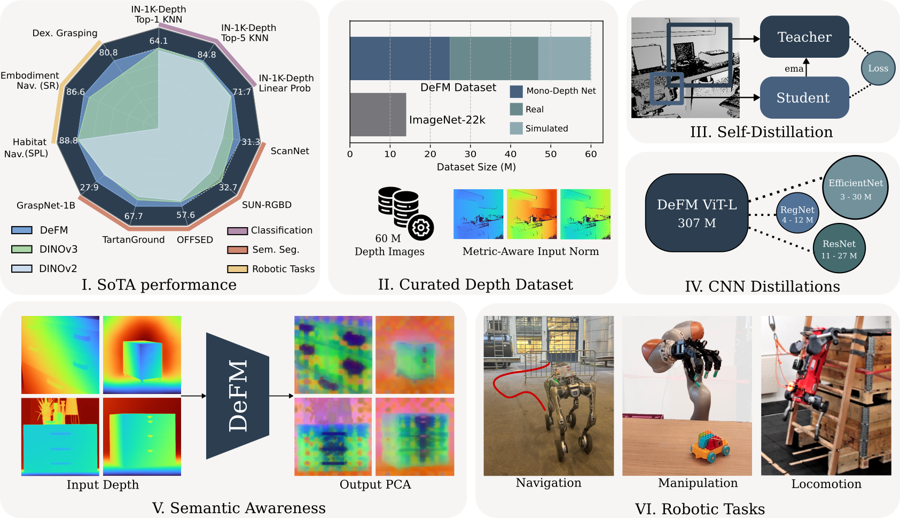
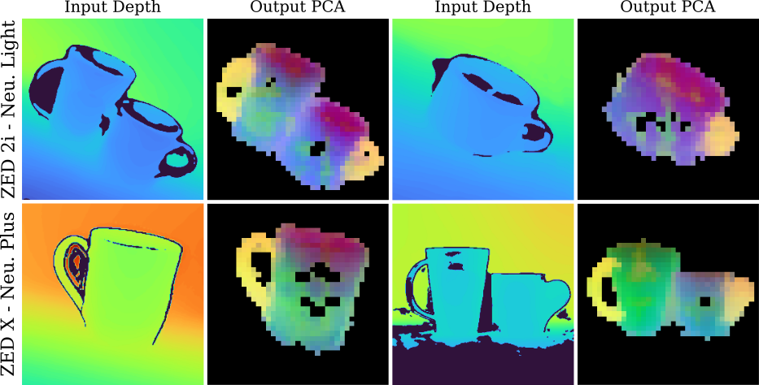
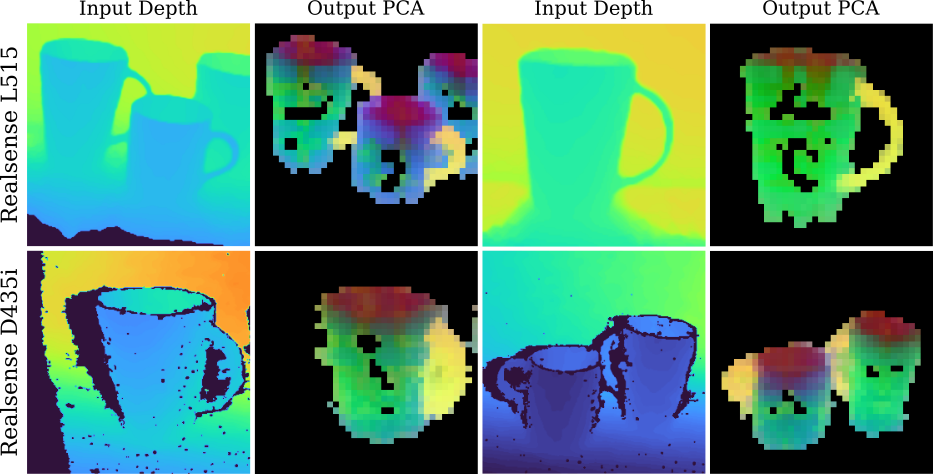
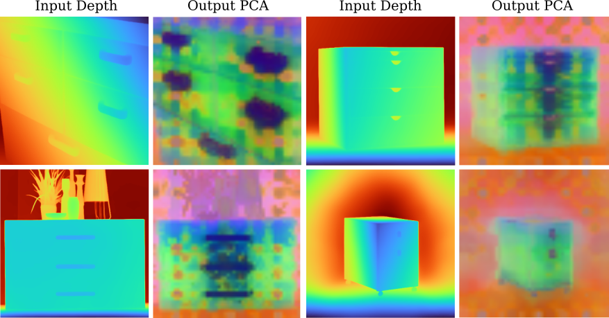
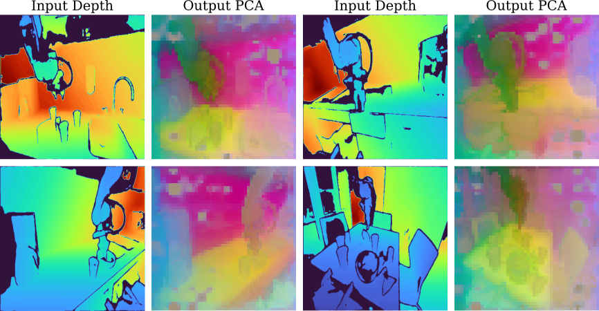
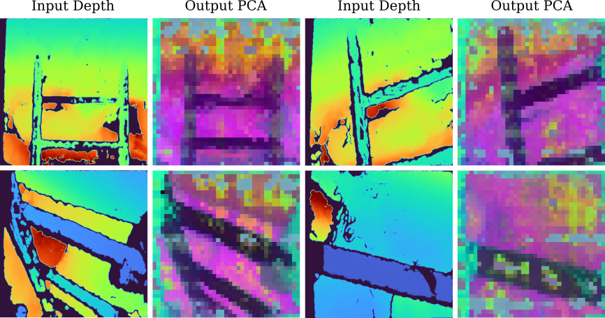
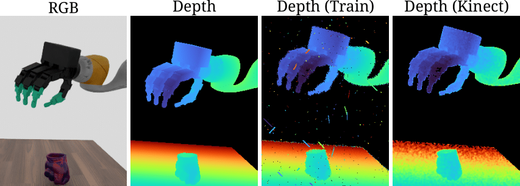
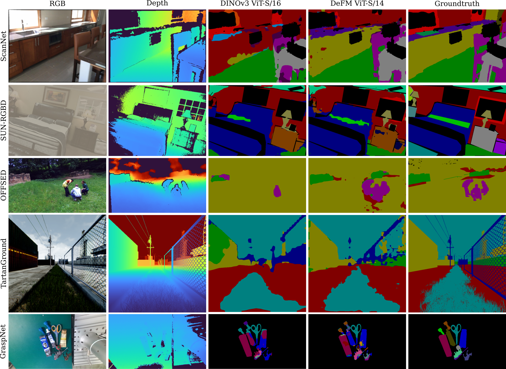

DeFM: Learning Foundation Representations from Depth for Robotics
tl;dr
A DINO-style encoder, but for depth image inputs. Works on diverse robotics tasks without task-specific finetuning. Ready-to-use open-source models ranging from 3M to 300M parameters.
Abstract
Depth sensors are widely deployed across robotic platforms, and advances in fast, high-fidelity depth simulation have enabled robotic policies trained on depth observations to achieve robust sim-to-real transfer for a wide range of tasks. Despite this, representation learning for depth modality remains underexplored compared to RGB, where large-scale foundation models now define the state of the art. To address this gap, we present DeFM, a self-supervised foundation model trained entirely on depth images for robotic applications. Using a DINO-style self-distillation objective on a curated dataset of 60M depth images, DeFM learns geometric and semantic representations that generalize to diverse environments, tasks, and sensors. To retain metric awareness across multiple scales, we introduce a novel input normalization strategy. We further distill DeFM into compact models suitable for resource-constrained robotic systems. When evaluated on depth-based classification, segmentation, navigation, locomotion, and manipulation benchmarks, DeFM achieves state-of-the-art performance and demonstrates strong generalization from simulation to real-world environments.
Highlights
First Depth Foundation Model for Robotics
Trained on 60M curated depth images using self-supervision, DeFM learns representations that generalize to diverse environments, tasks, and sensors.
State-of-the-Art Performance
SOTA performance across several tasks, including classification, segmentation, navigation, manipulation, and locomotion, without any task-specific fine-tuning.
Novel Metric-Aware Normalization
A novel 3-channel log-compressed input representation preserving metric depth across scales from millimeters to 100 meters.
Efficient Distilled Models
Includes 11 model variants ranging from 3M to 307M parameters, covering ViT-S/L and distilled CNNs like ResNet, EfficientNet, and RegNet.
Summary

DeFM Overview: We present DeFM, a foundation model for depth images. Pretrained using DINOv2 style self-distillation method (III) on a curated depth dataset of 60 M images (II), DeFM features achieve state-of-the-art results across several classification and semantic segmentation benchmarks (linear probing) (I). Features obtained from DeFM reveal semantic awareness upon performing PCA despite depth lacking texture and color (V). We distill our largest DeFM model into several efficient CNN networks (IV) to be used for various downstream robotic Reinforcement Learning tasks, including navigation, manipulation, and locomotion (VI).
Method Overview
Self-Distillation Framework: DeFM uses a DINOv2-style self-distillation objective with global and local crops. The student network processes masked global crops and local crops, learning to match the teacher's representation through DINO losses and iBOT patch-level supervision.
CNN-Distillation Framework:A BiFPN module is added on top of the CNN encoder to produce dense spatial features, which are supervised using the teacher’s spatial tokens. The teacher’s class token provides global supervision to the CNN’s pooled feature representation.
Metric-Aware Input Normalization: Log normalization effectively captures the overall depth range while preserving fine-grained structure in near-field regions (b, d, f). In contrast, standard metric normalization yields weaker contrast and poorly separated gradients (c, e). In our representation, we stack columns (b), (d), and (f) to form a 3-channel normalized depth input, which preserves metric depth while maintaining robustness across diverse domains.
Emergent Semantic Understanding
Despite lacking color and texture, DeFM learns rich semantic representations. PCA visualization reveals consistent feature clustering across objects, sensors, and domains.

Consistent semantic clustering of cup handles (yellow) across Realsense L515, D435i, ZED 2i, and ZED X sensors.

Consistent semantic clustering of cup handles (yellow) across Realsense L515, D435i, ZED 2i, and ZED X sensors.

DeFM automatically identifies and highlights drawer and cabinet handles across various furniture types.

Complex kitchen scenes show clear clustering: countertops, background surfaces, robot arms, and manipulable objects each have distinct features.

Real-world ladder climbing: DeFM consistently assigns similar features to ladder structures despite heavy sensor noise.
Navigation: Embodiment-Aware Long-Range Navigation
Navigation Performance
Key Insight: DeFM works out-of-the-box without task-specific depth preprocessing, achieving robust sim-to-real transfer and reducing collision failures in novel environments.
Manipulation: Dexterous Grasping
Our Frozen DeFM encoder outperforms a finetuned Imagenet encoder and a CNN encoder trained from scratch. We achieve competitive performance with a finetuned Dinov3 encoder. On finetuning our DeFM encoder, we outperform all baselines by 9 percent.

During training, images are augmented with speckles, dropout, and stick noise (similar to DextrAH). For evaluations, we also consider depth images augmented with the Kinect noise model.
Complex kitchen scenes show clear clustering: countertops, background surfaces, robot arms, and manipulable objects each have distinct features.
Dexterous Grasping Performance
Key Insight: DeFM features remain stable across sensor noise variations, with frozen encoder outperforming all frozen baselines by 23% (including DINOv3) and fine-tuned DeFM outperforming all baselines by 9%.
Locomotion: Quadruped Ladder Climbing
We match the performance to training a CNN baseline from scratch highlighting the generalizability of our features.
Real-world ladder climbing: DeFM consistently assigns similar features to ladder structures despite heavy sensor noise.
Ladder Climbing Performance
Key Insight: Frozen DeFM matches scratch-trained baseline (90.45%) without task-specific finetuning, while demonstrating noise robustness on real-world PCA analysis.
Dense Prediction: Semantic Segmentation

Qualitative Results: DeFM-S/14 significantly outperforms DINOv3-S/16 on diverse segmentation tasks spanning indoor (ScanNet, SUN-RGBD), outdoor (OFFSED, TartanGround), and manipulation (GraspNet-1B) domains.
Segmentation Performance (mIoU)
| Model | ScanNet | SUN-RGBD | OFFSED | TartanGround | GraspNet-1B |
|---|---|---|---|---|---|
| DeFM ViT-L/14 | 31.34 | 31.26 | 57.62 | 67.69 | 27.85 |
| DINOv3 ViT-L/16 | 28.52 | 32.74 | 54.42 | 62.16 | 23.89 |
| DeFM ViT-S/14 | 27.69 | 27.78 | 57.35 | 64.66 | 19.89 |
| DINOv3 ViT-S/16 | 20.05 | 18.42 | 56.32 | 56.97 | 14.87 |
Key Result: DeFM achieves state-of-the-art on 4/5 datasets. DeFM-S/14 shows up to 30% mIoU improvement over similar-sized baselines, demonstrating the critical need for depth-specific efficient foundation models.
Model Zoo: Efficient Variants for Robotics
11 model variants ranging from 3M to 307M parameters, optimized for diverse deployment scenarios.
Vision Transformers
| Model | Params | FLOPs | RTX 4090 (ms) - BS 128 | Jetson Orin (ms) |
|---|---|---|---|---|
| ViT-L/14 | 307M | 9962 G | 625 | 72.8 |
| ViT-S/14 | 22M | 707 G | 64 | 11.9 |
ResNet Family
| Model | Params | FLOPs | RTX 4090 (ms) | Jetson Orin (ms) |
|---|---|---|---|---|
| ResNet-50 | 26M | 631 G | 69 | 17.8 |
| ResNet-34 | 22M | 494 G | 33 | 13.5 |
| ResNet-18 | 12M | 256 G | 21 | 8.7 |
RegNet Family
| Model | Params | Orin (ms) |
|---|---|---|
| RegNetY-1.6GF | 12M | 41.8 |
| RegNetY-800MF | 6M | 24.2 |
| RegNetY-400MF | 4M | 25.2 |
EfficientNet Family
| Model | Params | Orin (ms) |
|---|---|---|
| EfficientNet-B6 | 29M | 54.1 |
| EfficientNet-B4 | 14M | 39.7 |
| EfficientNet-B2 | 5M | 28.4 |
| EfficientNet-B0 | 3M | 21.0 |
Note: All timings measured with PyTorch (BS=128 for RTX 4090, BS=1 for Jetson Orin, 224×224 input). TensorRT/ONNX optimization can further reduce latency, especially on edge devices.
BibTeX
@article{patel2025defm,
title={DeFM: Learning Foundation Representations from Depth for Robotics},
author={Patel, Manthan and Frey, Jonas and Mittal, Mayank and Yang, Fan and Hansson, Alexander and Bar, Amir and Cadena, Cesar and Hutter, Marco},
journal={Under Review},
year={2026},
url={https://leggedrobotics.github.io/defm}
}